Every Pictomino puzzle stars one of these 15 real cat breeds. Learn their stories below — then solve their puzzles in the free game.
All 15 cat breeds below appear as real puzzle photos in Pictomino. Finish a level in the game and you'll unlock a fun fact about the breed you just solved — no reading homework required.
Each breed card shows a real photo from the game plus three kid-friendly facts. Want the story behind the game? Read what spatial reasoning is, or browse our full animal puzzles for kids collection.
Pick a favorite, read its facts, and then puzzle it in the game.
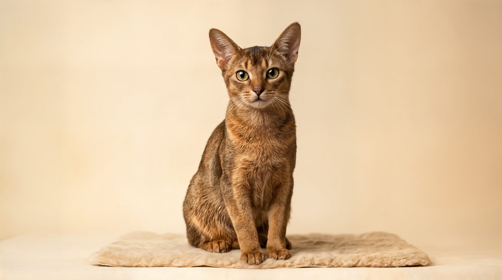
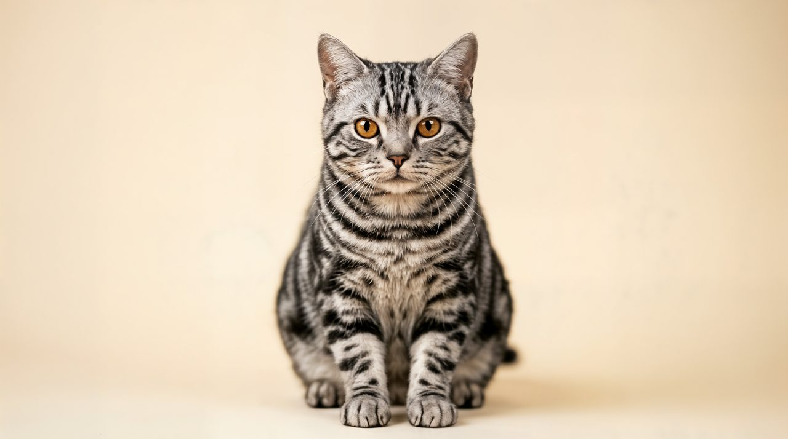
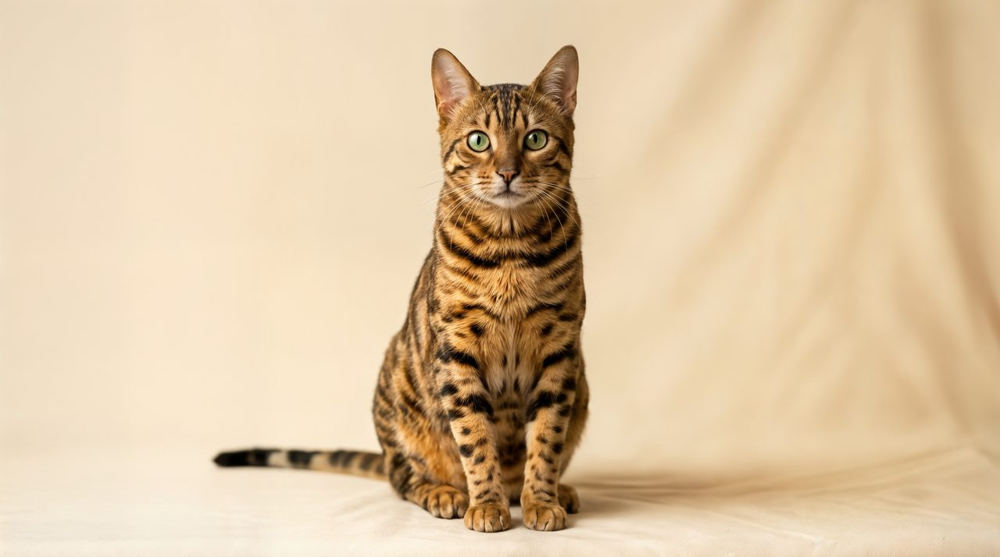
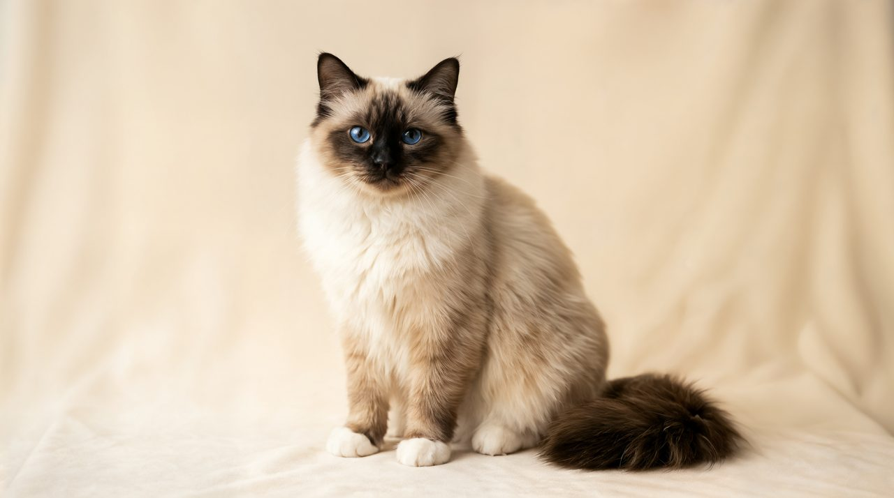
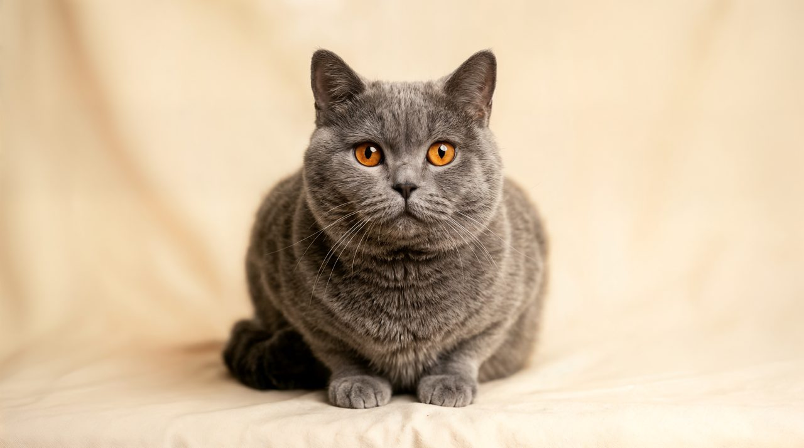
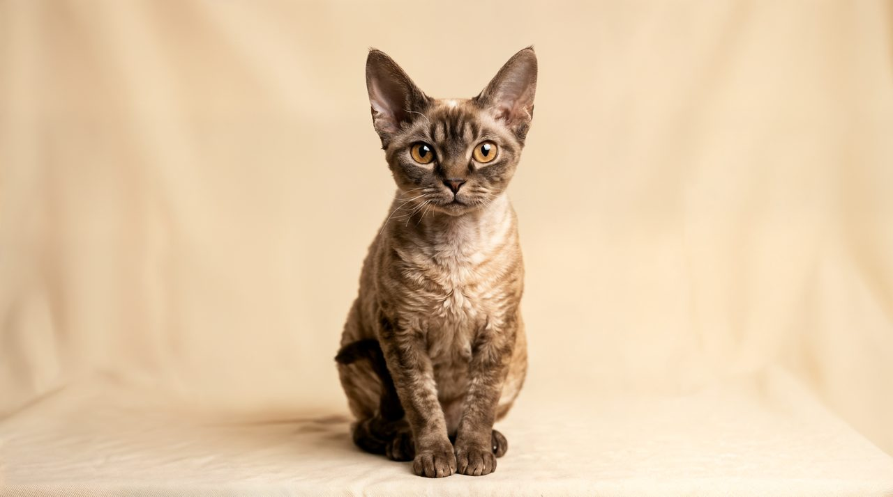
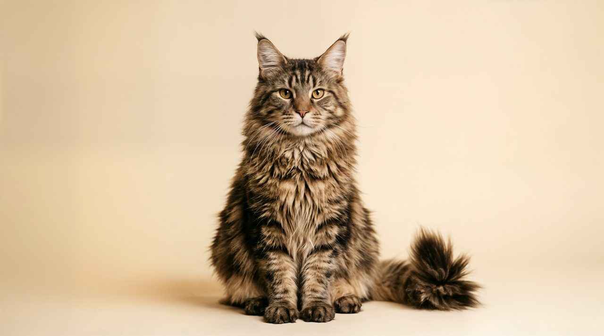
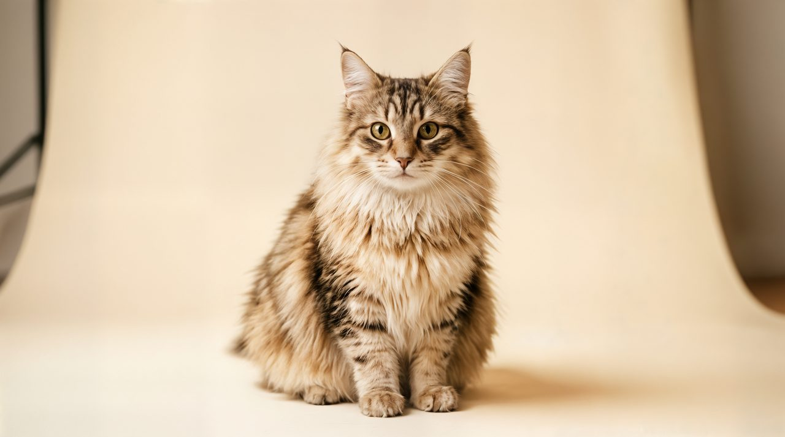
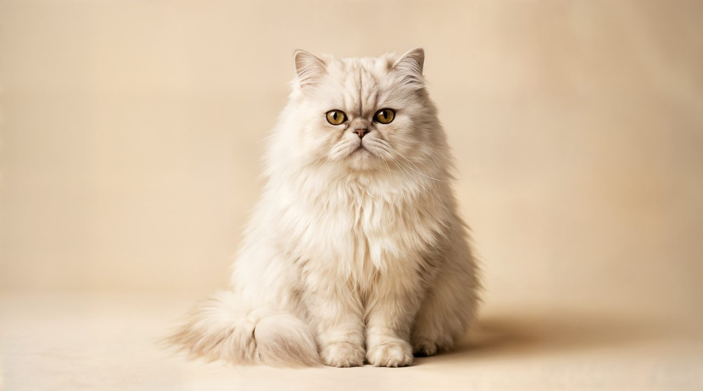
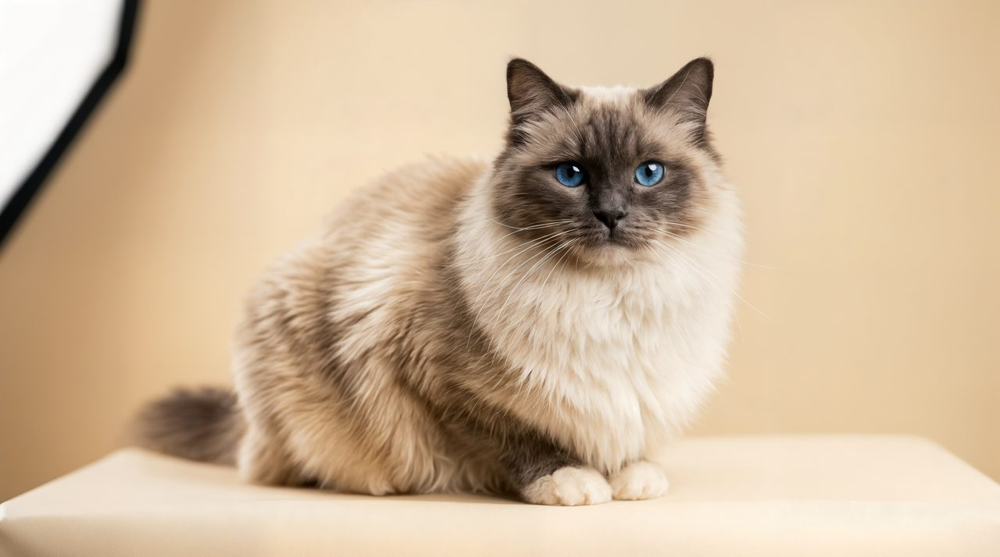
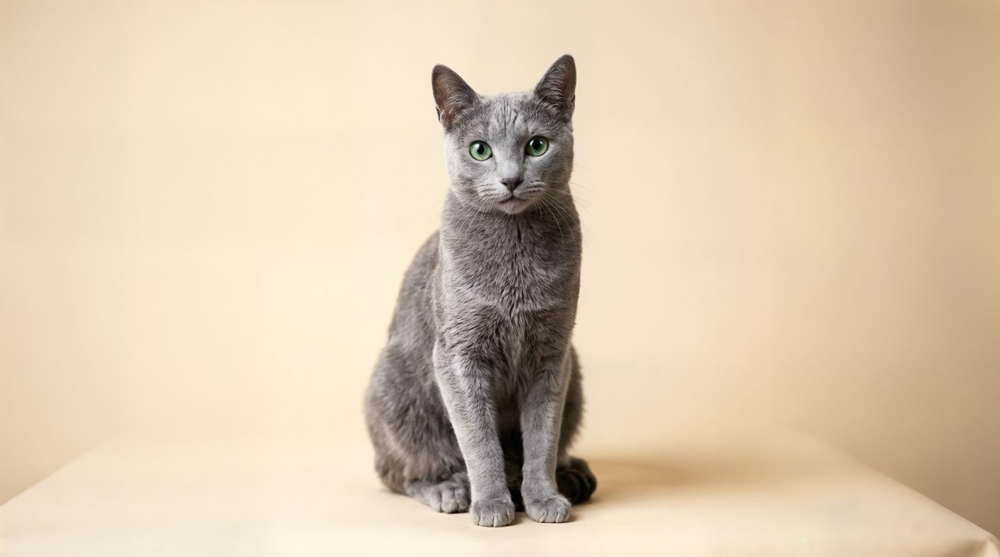
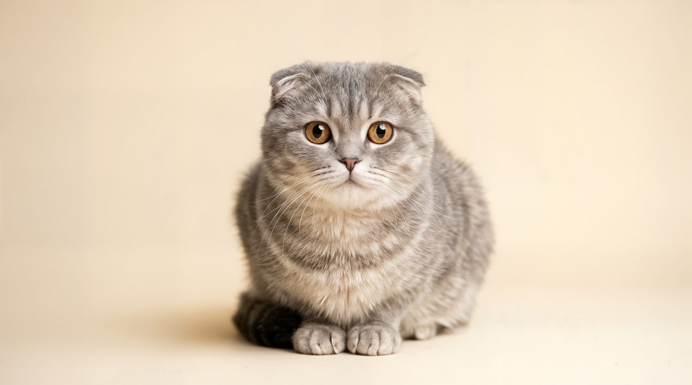
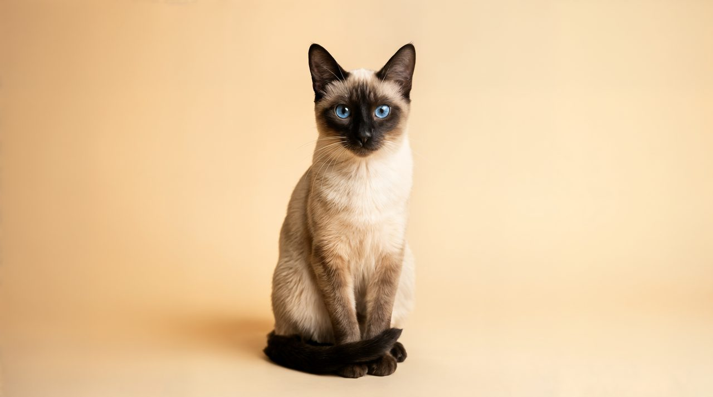
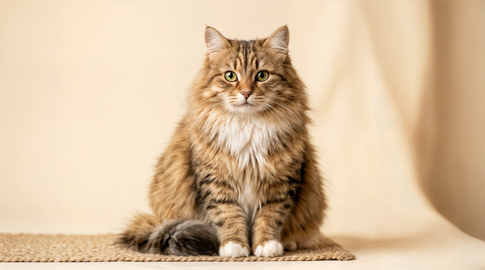
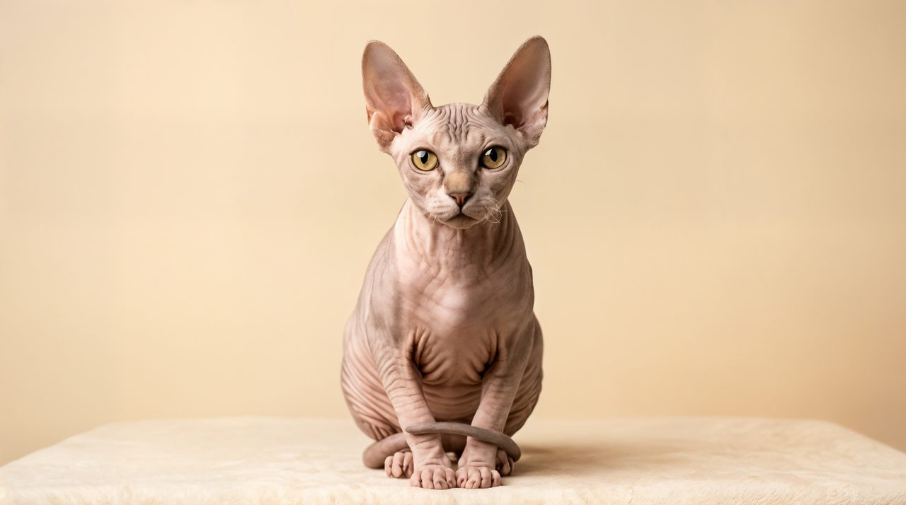
Pictomino features 15 real cat breeds: Abyssinian, American Shorthair, Bengal, Birman, British Shorthair, Devon Rex, Maine Coon, Norwegian Forest Cat, Persian, Ragdoll, Russian Blue, Scottish Fold, Siamese, Siberian, and Sphynx. Every puzzle photo is one of these cats.
Yes — every cat in the game is a real, recognized breed, and every photo is a real cat. The fun facts you unlock after solving a puzzle are breed-accurate too, so kids learn genuine cat knowledge while they play.
You can! Try Furriq — a free AI-powered cat breed identifier. Snap a photo of your cat and it will suggest the closest breed in seconds.
Completely free. There is no download, no sign-up, no ads, and no paywall. Open Pictomino in any browser and start puzzling right away.
Jump into the full Pictomino game — 15 cat breeds, three difficulty levels, and a new daily puzzle every day.
🎮 Play the Game — FreeUse Furriq — a free AI-powered cat breed identifier. Snap a photo and find out your cat's breed in seconds.
Try Furriq — Free Cat Breed Identifier